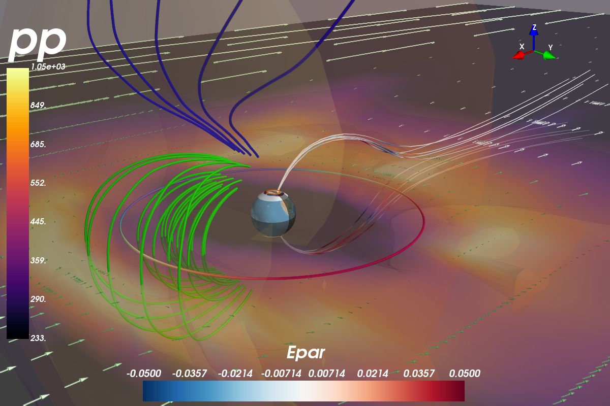

This best way to explain how to use Mayavi is by example, so here is the plot made by test_mvi.py along with some code. If Mayavi is not working for you, check out Useful Functions for a collection of workarounds.
#!/usr/bin/env python
"""Test the gamut of Mayavi plots"""
from __future__ import print_function
import argparse
import os
import sys
from viscid_test_common import next_plot_fname, xfail
import numpy as np
import viscid
from viscid import sample_dir
from viscid import vutil
try:
from viscid.plot import vlab
except ImportError:
xfail("Mayavi not installed")
# In this test, the OpenGGCM reader needs to read the log file
# in order to determine the crds when doing the cotr transformation.
# In general, this flag is useful to put in your viscidrc file, see
# the corresponding page in the tutorial for more information.
viscid.readers.openggcm.GGCMFile.read_log_file = True
viscid.readers.openggcm.GGCMGrid.mhd_to_gse_on_read = "auto"
def _main():
parser = argparse.ArgumentParser(description=__doc__)
parser.add_argument("--show", "--plot", action="store_true")
parser.add_argument("--interact", "-i", action="store_true")
args = vutil.common_argparse(parser)
f3d = viscid.load_file(os.path.join(sample_dir, 'sample_xdmf.3d.[0].xdmf'))
f_iono = viscid.load_file(os.path.join(sample_dir, "sample_xdmf.iof.[0].xdmf"))
b = f3d["b"]
v = f3d["v"]
pp = f3d["pp"]
e = f3d["e_cc"]
vlab.figure(size=(1200, 800), offscreen=not args.show)
##########################################################
# make b a dipole inside 3.1Re and set e = 0 inside 4.0Re
cotr = viscid.Cotr(dip_tilt=0.0) # pylint: disable=not-callable
moment = cotr.get_dipole_moment(crd_system=b)
isphere_mask = viscid.make_spherical_mask(b, rmax=3.1)
viscid.fill_dipole(b, m=moment, mask=isphere_mask)
e_mask = viscid.make_spherical_mask(b, rmax=4.0)
viscid.set_in_region(e, 0.0, alpha=0.0, mask=e_mask, out=e)
######################################
# plot a scalar cut plane of pressure
pp_src = vlab.field2source(pp, center='node')
scp = vlab.scalar_cut_plane(pp_src, plane_orientation='z_axes', opacity=0.5,
transparent=True, view_controls=False,
cmap="inferno", logscale=True)
scp.implicit_plane.normal = [0, 0, -1]
scp.implicit_plane.origin = [0, 0, 0]
cbar = vlab.colorbar(scp, title=pp.name, orientation='vertical')
######################################
# plot a vector cut plane of the flow
vcp = vlab.vector_cut_plane(v, scalars=pp_src, plane_orientation='z_axes',
view_controls=False, mode='arrow',
cmap='Greens_r')
vcp.implicit_plane.normal = [0, 0, -1]
vcp.implicit_plane.origin = [0, 0, 0]
##############################
# plot very faint isosurfaces
iso = vlab.iso_surface(pp_src, contours=5, opacity=0.1, cmap=False)
##############################################################
# calculate B field lines && topology in Viscid and plot them
seeds = viscid.SphericalPatch([0, 0, 0], [2, 0, 1], 30, 15, r=5.0,
nalpha=5, nbeta=5)
b_lines, topo = viscid.calc_streamlines(b, seeds, ibound=3.5,
obound0=[-25, -20, -20],
obound1=[15, 20, 20], wrap=True)
vlab.plot_lines(b_lines, scalars=viscid.topology2color(topo))
######################################################################
# plot a random circle at geosynchronus orbit with scalars colored
# by the Matplotlib viridis color map, just because we can; this is
# a useful toy for debugging
circle = viscid.Circle(p0=[0, 0, 0], r=6.618, n=128, endpoint=True)
scalar = np.sin(circle.as_local_coordinates().get_crd('phi'))
surf = vlab.plot_line(circle.get_points(), scalars=scalar, clim=0.8,
cmap="Spectral_r")
######################################################################
# Use Mayavi (VTK) to calculate field lines using an interactive seed
# These field lines are colored by E parallel
epar = viscid.project(e, b)
epar.name = "Epar"
bsl2 = vlab.streamline(b, epar, seedtype='sphere', seed_resolution=4,
integration_direction='both', clim=(-0.05, 0.05))
# now tweak the VTK streamlines
bsl2.stream_tracer.maximum_propagation = 20.
bsl2.seed.widget.center = [-11, 0, 0]
bsl2.seed.widget.radius = 1.0
bsl2.streamline_type = 'tube'
bsl2.tube_filter.radius = 0.03
bsl2.stop() # this stop/start was a hack to get something to update
bsl2.start()
bsl2.seed.widget.enabled = False
cbar = vlab.colorbar(bsl2, title=epar.name, orientation='horizontal')
cbar.scalar_bar_representation.position = (0.2, 0.01)
cbar.scalar_bar_representation.position2 = (0.6, 0.14)
###############################################################
# Make a contour at the open-closed boundary in the ionosphere
seeds_iono = viscid.Sphere(r=1.063, pole=-moment, ntheta=256, nphi=256,
thetalim=(0, 180), philim=(0, 360), crd_system=b)
_, topo_iono = viscid.calc_streamlines(b, seeds_iono, ibound=1.0,
nr_procs='all',
output=viscid.OUTPUT_TOPOLOGY)
topo_iono = np.log2(topo_iono)
m = vlab.mesh_from_seeds(seeds_iono, scalars=topo_iono, opacity=1.0,
clim=(0, 3), color=(0.992, 0.445, 0.0))
m.enable_contours = True
####################################################################
# Plot the ionosphere, note that the sample data has the ionosphere
# at a different time, so the open-closed boundary found above
# will not be consistant with the field aligned currents
fac_tot = 1e9 * f_iono['fac_tot']
m = vlab.plot_ionosphere(fac_tot, bounding_lat=30.0, vmin=-300, vmax=300,
opacity=0.75, rotate=cotr, crd_system=b)
m.actor.property.backface_culling = True
########################################################################
# Add some markers for earth, i.e., real earth, and dayside / nightside
# representation
vlab.plot_blue_marble(r=1.0, lines=False, ntheta=64, nphi=128,
rotate=cotr, crd_system=b)
# now shade the night side with a transparent black hemisphere
vlab.plot_earth_3d(radius=1.01, night_only=True, opacity=0.5, crd_system=b)
####################
# Finishing Touches
# vlab.axes(pp_src, nb_labels=5)
oa = vlab.orientation_axes()
oa.marker.set_viewport(0.75, 0.75, 1.0, 1.0)
# note that resize won't work if the current figure has the
# off_screen_rendering flag set
# vlab.resize([1200, 800])
vlab.view(azimuth=45, elevation=70, distance=35.0, focalpoint=[-2, 0, 0])
##############
# Save Figure
# print("saving png")
# vlab.savefig('mayavi_msphere_sample.png')
# print("saving x3d")
# # x3d files can be turned into COLLADA files with meshlab, and
# # COLLADA (.dae) files can be opened in OS X's preview
# #
# # IMPORTANT: for some reason, using bounding_lat in vlab.plot_ionosphere
# # causes a segfault when saving x3d files
# #
# vlab.savefig('mayavi_msphere_sample.x3d')
# print("done")
vlab.savefig(next_plot_fname(__file__))
###########################
# Interact Programatically
if args.interact:
vlab.interact()
#######################
# Interact Graphically
if args.show:
vlab.show()
try:
vlab.mlab.close()
except AttributeError:
pass
return 0
if __name__ == "__main__":
sys.exit(_main())
##
## EOF
##